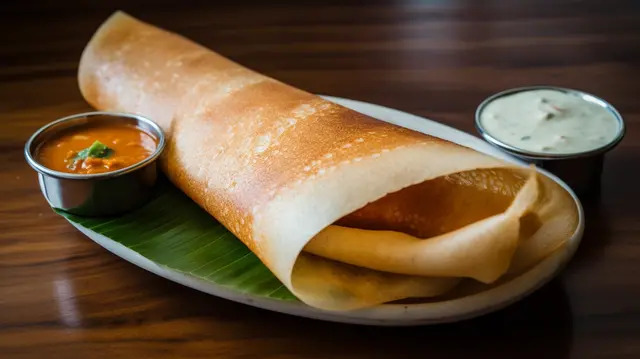

Masala Dosa: The South Indian crispy classic

Description
Masala Dosa is a thin, crispy, golden-brown fermented crepe made from a rice and urad dal batter, stuffed with a spicy, buttery potato-onion masala filling, and usually served with coconut chutney and tangy sambar.It’s a staple in South Indian cuisine, but it has straight-up cult status across India and beyond — from roadside stalls to 5-star buffets.
Why its legendary?
- Crispy, paper-thin dosa shell
- Spicy, buttery, turmeric-hinged potato masala
- Fermented batter = gut-friendly & flavor-packed
- Served with multiple chutneys and sambar — the full thali vibe
It's basically the Indian breakfast taco, but better :>
Ingrediants
For Dosa Batter
- 1½ cups rice (regular or parboiled)
- ½ cup urad dal (split black gram)
- 2 tbsp poha (flattened rice) - optional, for extra crisp
- Salt to taste
- Water (for grinding and consistency)
For potatoe masala filling:
- 3-4 medium potatoes (boiled & mashed)
- 1 large onion (thinly sliced)
- 1-2 green chilies (chopped)
- 1 tsp mustard seeds
- 1 tsp urad dal
- ½ tsp turmeric
- 1 tsp grated ginger
- 1 sprig curry leaves
- Salt to taste
- Oil or ghee - for sautéing
- Fresh coriander - for garnish
- Pinch of asafoetida (hing) - optional but elite
How to make Msala Dosa Step-by-Step
Step 1: Make the Batter (Fermentation Recquired)
- Wash and soak rice + urad dal (and poha if using) separately for 4-6 hours
- Grind into a smooth batter (slightly grainy is fine)
- Mix both, add salt, and let it ferment overnight (8-12 hours) in a warm spot
- Batter should rise and smell mildly sour — now you're ready
Step 2: Make the Potatoe Masala
- Heat oil or ghee in a pan
- Add mustard seeds, let them splutter
- Add urad dal, curry leaves, green chili, ginger, and sliced onions
- Sauté till onions are soft and translucent
- Add turmeric, salt, and mashed boiled potatoes
- Mix well, cook for 2-3 mins
- Finish with coriander leaves
Step 3: Cook the Dosa
- Heat a flat non-stick or cast iron tawa until hot
- Pour a ladle of batter in center, spread in circles outward to make it thin
- Drizzle ghee or oil around edges
- Cook on medium-high heat until golden and crisp
- Add a scoop of potato masala in the center
- Fold dosa over and serve hot
Serve It With
- Cocout chutney(classic)
- Tomatoe or garlic chutney
- Tangy Sambar
- Filter coffee (if you're really commiting)
Home